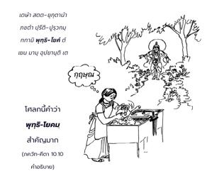
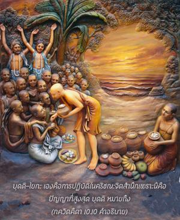
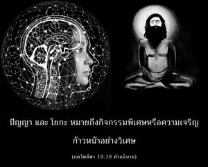

สำหรับบุคคลที่เสียสละในการรับใช้ข้าด้วยใจรักอยู่เสมอ ข้าจะให้ความเข้าใจเพื่อให้พวกเขาสามารถมาถึงข้า



โศลกนี้คำว่า พุทฺธิ-โยคมฺ สำคัญมากเราอาจจำได้ว่าในบทที่สองทรงสอน อรฺชุน ว่าพระองค์ได้ตรัสต่อ อรฺชุน หลายอย่าง พร้อมทั้งสอนวิธีแห่ง พุทฺธิ-โยค มาบัดนี้ทรงอธิบายถึง พุทฺธิ-โยค ตัว พุทฺธิ-โยค เองคือการปฏิบัติในกฺฤษฺณจิตสำนึกเพราะนี่คือปัญญาที่สูงสุด พุทฺธิ หมายถึงปัญญา และโยคะหมายถึงกิจกรรมพิเศษหรือความเจริญก้าวหน้าอย่างวิเศษ เมื่อเราพยายามกลับคืนสู่เหย้าคืนสู่องค์ภควานฺและรับเอากฺฤษฺณจิตสำนึกในการอุทิศตนเสียสละรับใช้มาปฏิบัติอย่างเต็มที่ การปฏิบัติเช่นนี้เรียกว่า พุทฺธิ-โยค อีกนัยหนึ่ง พุทฺธิ-โยค คือวิธีการที่สามารถทำให้เราออกจากพันธนาการทางโลกวัตถุนี้ได้ จุดมุ่งหมายสูงสุดในความเจริญก้าวหน้าคือองค์กฺฤษฺณ ผู้คนไม่ทราบเช่นนี้ ฉะนั้นการคบหาสมาคมกับสาวกและพระอาจารย์ทิพย์ผู้ที่เชื่อถือได้จึงเป็นสิ่งสำคัญ เราควรรู้ว่าจุดมุ่งหมายของเราคือองค์กฺฤษฺณ เมื่อกำหนดจุดมุ่งหมายไว้เรียบร้อยแล้วจากนั้นวิถีทางอาจช้าหน่อย แต่จะเดินก้าวหน้าต่อไปเรื่อยๆจนในที่สุดเราบรรลุถึงเป้าหมาย
เมื่อบุคคลรู้เป้าหมายแห่งชีวิตแต่ยังมัวเมาอยู่กับผลของกิจกรรมเช่นนี้เขาปฏิบัติ กรฺม-โยค เมื่อรู้ว่าเป้าหมายคือองค์กฺฤษฺณ แต่ได้รับความสุขจากการคาดคะเนทางจิตใจเพื่อให้เข้าใจองค์กฺฤษฺณเช่นนี้เขาปฏิบัติ ชฺญาน-โยค และเมื่อรู้เป้าหมายและเสาะแสวงหาองค์กฺฤษฺณโดยสมบูรณ์ในกฺฤษฺณจิตสำนึกพร้อมทั้งอุทิศตนเสียสละรับใช้เช่นนี้เขาปฏิบัติ ภกฺติ-โยค หรือ พุทฺธิ-โยค ซึ่งเป็นโยคะที่สมบูรณ์ โยคะที่สมบูรณ์นี้เป็นระดับที่บริบูรณ์สูงสุดแห่งชีวิต
บุคคลอาจมีพระอาจารย์ทิพย์ผู้เชื่อถือได้และอาจยึดติดอยู่กับองค์กรหรือสมาคมทิพย์ ถึงกระนั้นหากไม่ฉลาดพอที่จะสร้างความก้าวหน้าองค์กฺฤษฺณจะสอนเขาจากภายในเพื่อในที่สุดเขาอาจมาถึงพระองค์โดยไม่ยากลำบากนัก คุณสมบัติคือบุคคลนั้นต้องปฏิบัติกฺฤษฺณจิตสำนึกอยู่เสมอด้วยความรักและอุทิศตนถวายการรับใช้ทุกรูปแบบ เขาควรปฏิบัติงานบางอย่างเพื่อองค์กฺฤษฺณและควรทำไปด้วยใจรัก หากสาวกไม่ฉลาดพอที่จะเจริญก้าวหน้าบนหนทางแห่งความรู้แจ้งตนเอง แต่มีความจริงใจและอุทิศตนต่อกิจกรรมแห่งการอุทิศตนเสียสละรับใช้ องค์ภควานฺจะทรงให้โอกาสเขาเจริญก้าวหน้าและบรรลุถึงพระองค์ในที่สุด